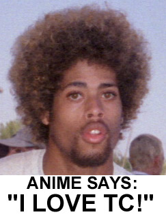

Ah yes, what better way to say goodbye to a childish scene than in an immature childish way? As for those in the scene, allow me to break down my goodbyes and fuck-you's.
Anime: Anime, Anime, Anime. Fuck you. Fuck you and your little bitch girlfriend. Now come down to Decatur and kick my ass for it since you're such a toughguy. You've been saying you were going to kick my ass for close to 2 months now, and I haven't seen anything. Could it be that you're as much of a shit talker as you say I am? Even if you're down in Decatur and decide to not beat my ass, go ahead and give me a call anyway cuz I sure could go for some nice sloppy head....
D: D...I don't have much to say...I thought you and I had worked all our shit out when I saw you at Anti's, but I guess you're just as "two-faced" as I am.
Niders: Damn...I sure wish we could have gotten together. I would have loved to rock that ass. Maybe we could put this all aside and you could fondle my nuts sometime?
Low Tek: Low, we had our drama in the past, I thought that was over. Guess not. If you're just trying to get me back for whatever I did almost a year ago (I still don't fully get it), get a fucking life. Learn some decent web design, because that green on Invisions is enough to give someone a fucking seizure.
Everyone Else: I'll see you guys around. It's been a blast meeting everyone and going to the parties and doing the drugs and listening to the music.
For those of you who think I'm a total asshole, more power to you. But I have some bad news for you. I'm not the only asshole in this world. I'm not the only asshole in this city. I'm not the only asshole in this scene. In fact, this scene is full of assholes. Personally I could care less what people have to say about me. But just keep in mind that it takes more than one person or one side to have a conflict. We are all shitty people, you included. So, in closing, I'd like to wish everyone a good life, and perhaps I'll run into you somewhere down the road in life.
Sincerely,
[tc]
thought criminal